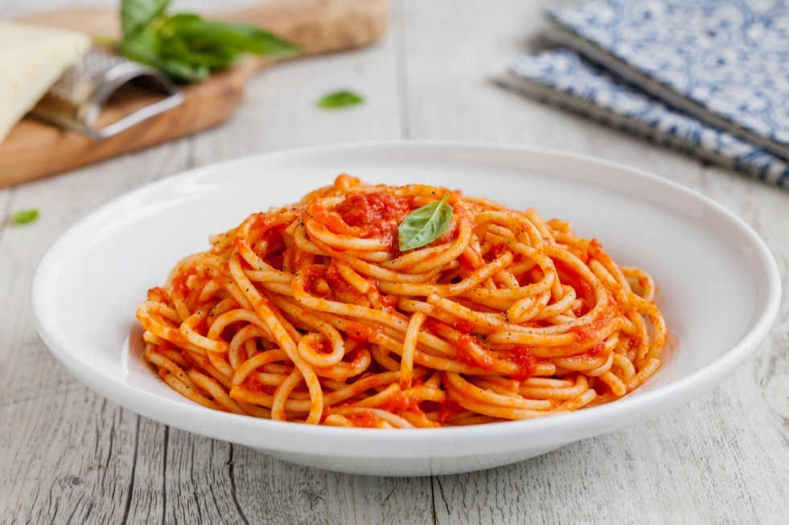

Penne al Pomodoro
Ingredienti
Di seguito riportiamo gli ingredienti per preparare il nostro piatto
- Penne 500g
- Pomodori 800g
- Olio Extravergine 2 cucch.
- Aglio a spicchi
- Erbe aromatiche
Preparazione
- Mettere sul fuoco una pentola contenete acqua
- Soffriggere aglio ed erbe aromatiche
- Versare i pomodori nel soffritto
- Cuocere la pasta
- Saltare in padella la pasta con il soffritto